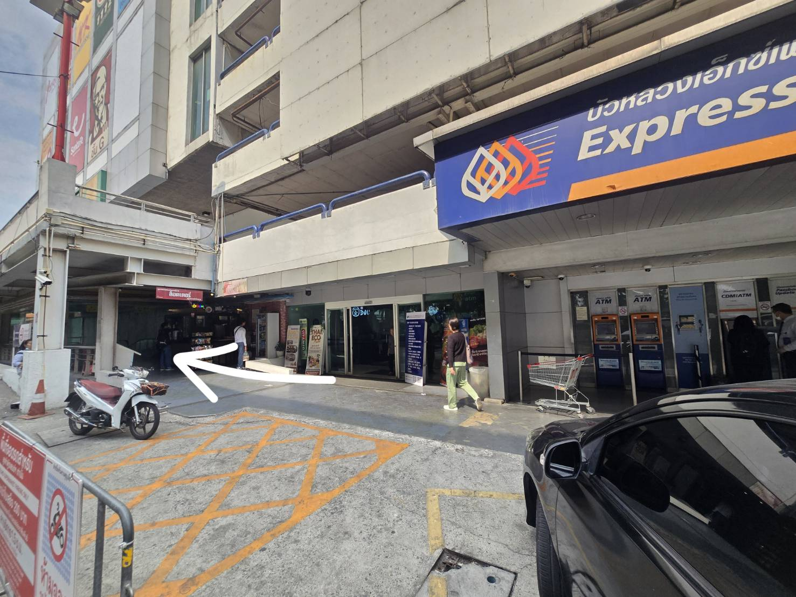
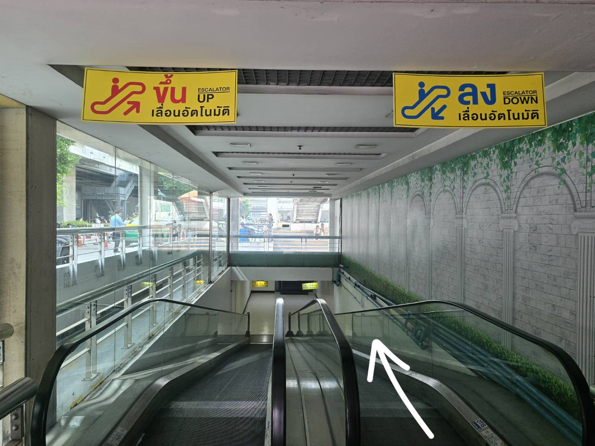
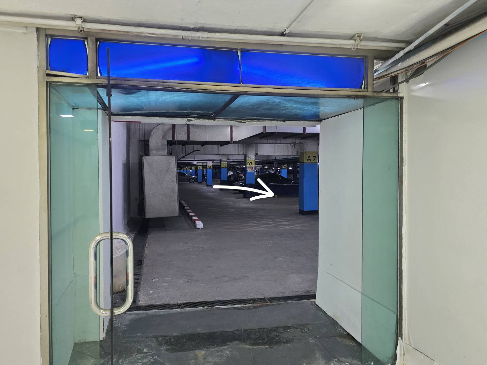
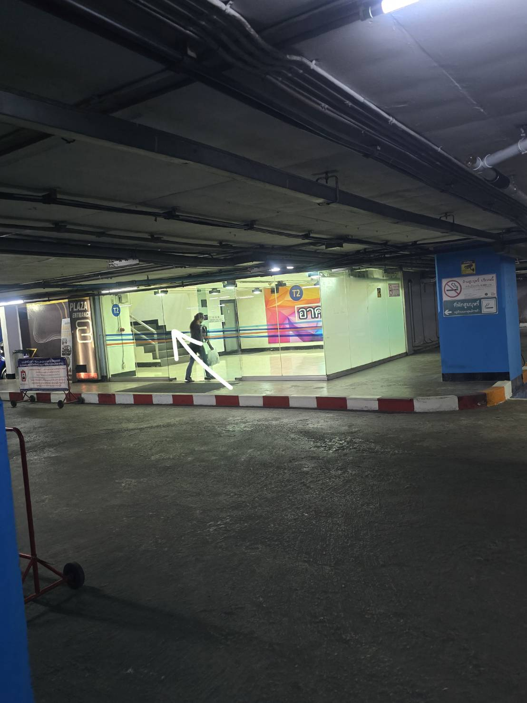
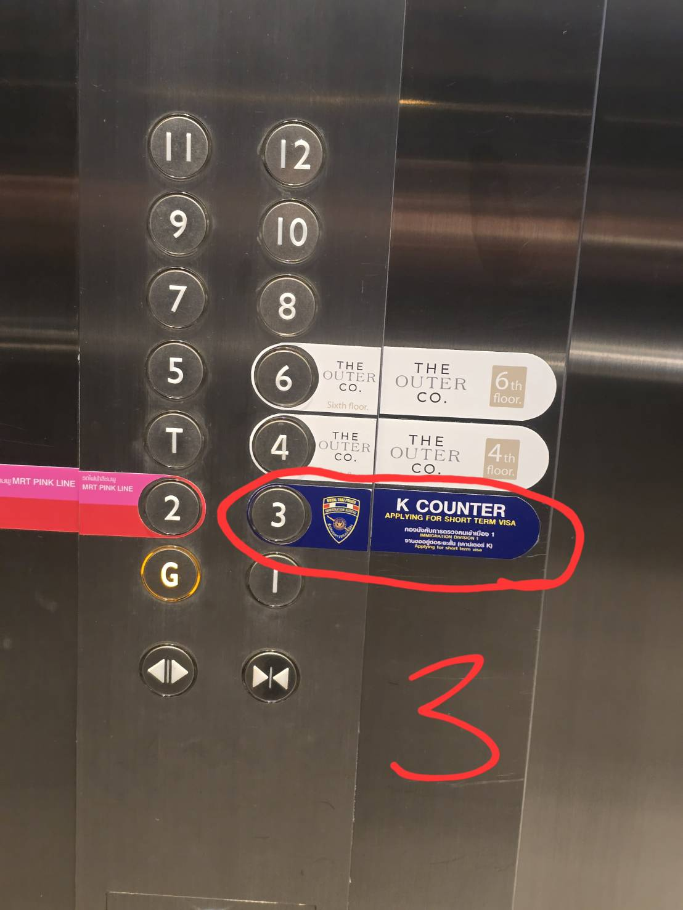
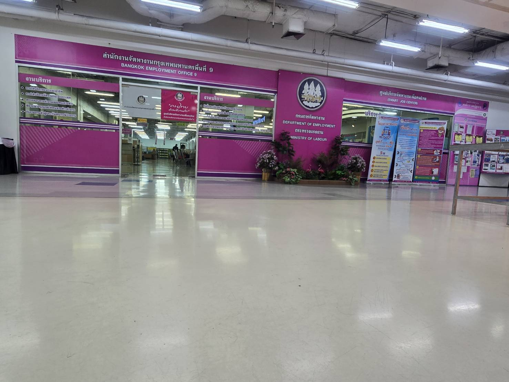

06:00 - 09:00 AM ONLY
IT Square Laksi, 3rd Floor (Main entrance closed)
เฉพาะเช้า 06:00 - 09:00 น. เนื่องจากประตูทางเข้าปกติยังไม่เปิด
TH ถึงหน้าธนาคารกรุงเทพ เดินตามลูกศร ตรงไป
EN Arrive at Bangkok Bank Express, then go straight following the arrow.
CN 到达曼谷银行前，按照箭头方向直行。

TH ลงบันไดเลื่อน
EN Go down the escalator.
CN 乘自动扶梯下楼。

TH ลงบันไดเลื่อนแล้วเลี้ยวขวา
EN After the escalator, turn right into the parking area.
CN 下扶梯后向右转进入停车场。

TH เดินตรงมา เจอทางเข้าลิฟต์ T2
EN Walk straight to find the T2 Lift Entrance.
CN 直行到达 T2 电梯入口。

TH กดลิฟต์ขึ้นชั้น 3 ตม. K COUNTER
EN Take the lift to 3rd Floor (Immigration K COUNTER).
CN 乘电梯至 3 楼（移民局 K 柜台）。

TH ออกจากลิฟต์ เลี้ยวขวา เดินตรงไปจะเจอจุดนัดหมาย (สีชมพู)
EN Exit the lift, turn right, and go straight to the pink area.
CN 出电梯后向右转，直行即可到达目的地（粉色区域）。

📢 IMPORTANT / 重要提示 / ข้อมูลสำคัญ:
เส้นทางนี้ใช้ได้เฉพาะเวลา 06:00 - 09:00 น. เนื่องจากประตูทางเข้าหลักของห้างยังไม่เปิด
This route is only for 06:00 - 09:00 AM as the main mall entrance is closed.
此路线仅限 06:00 - 09:00，因为商场正门尚未开放。
หากเดินทางมาหลัง 10:00 น. สามารถใช้ทางเข้าปกติได้ / After 10:00 AM, use the main entrance / 上午10点以后请使用正门。